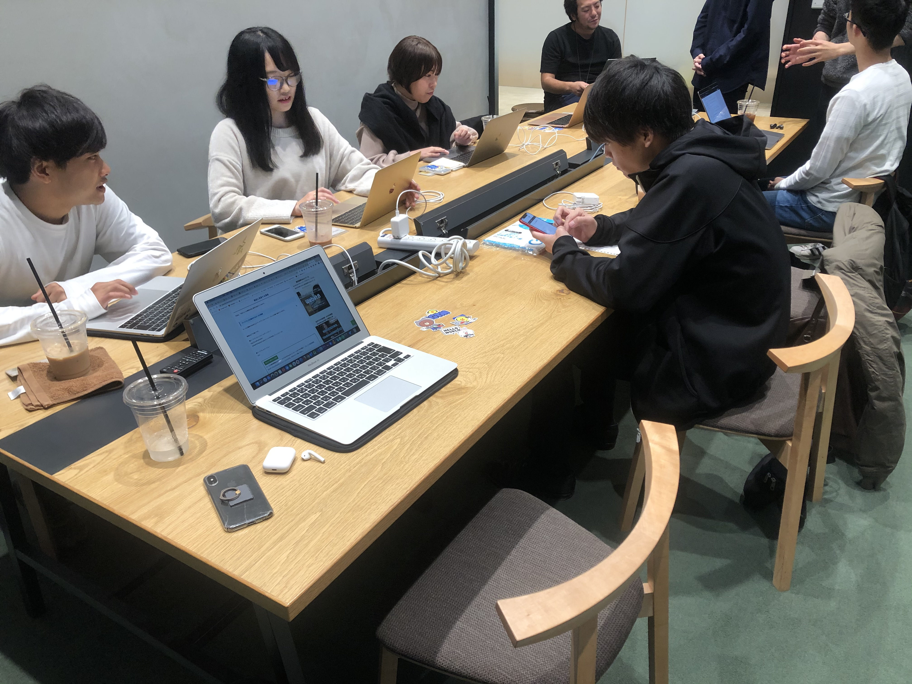
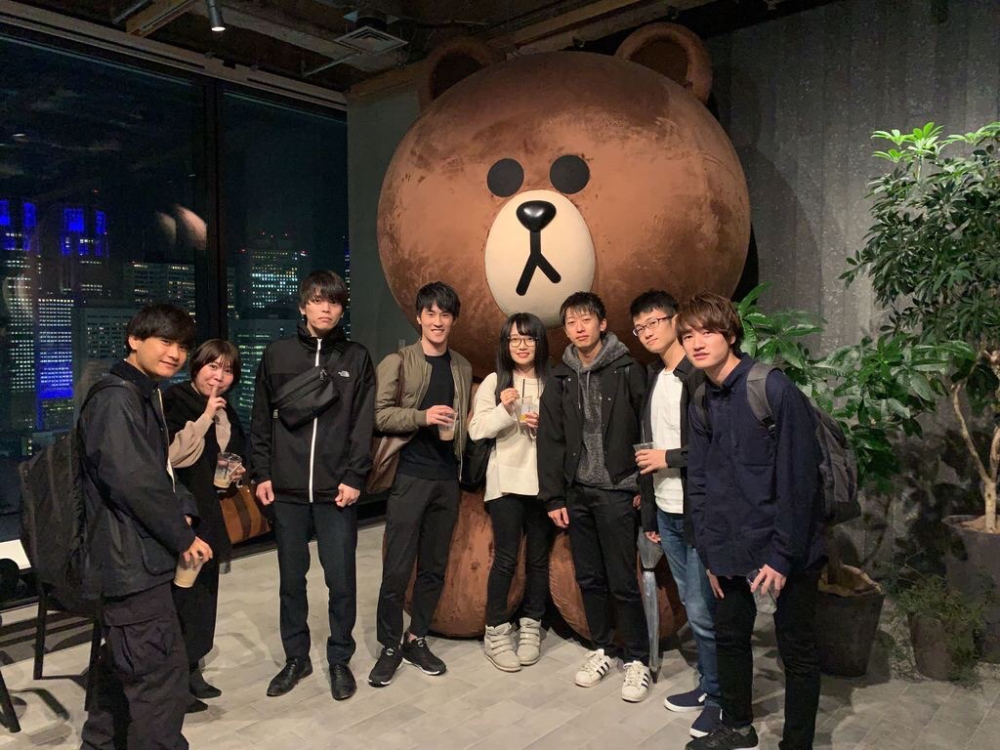
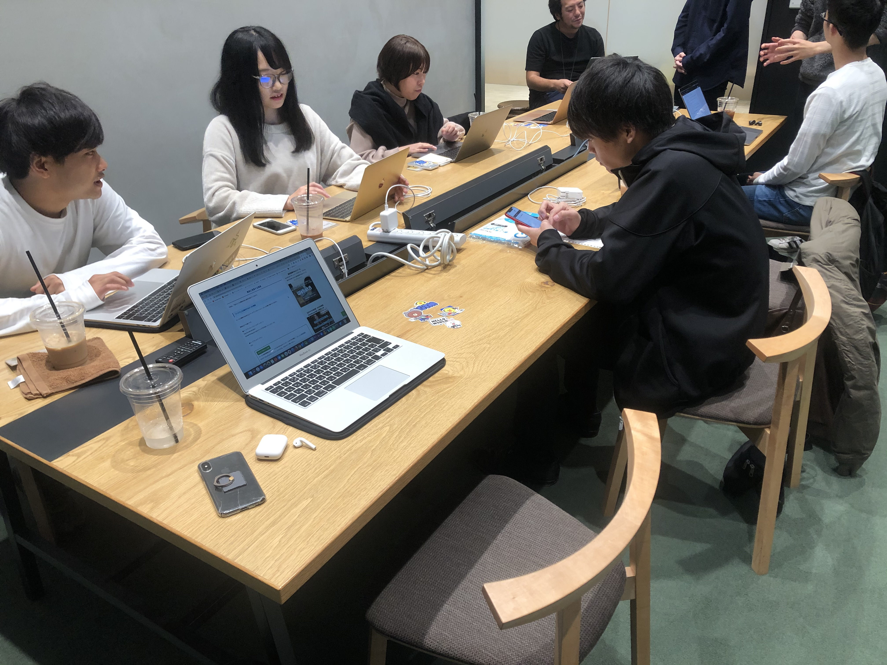
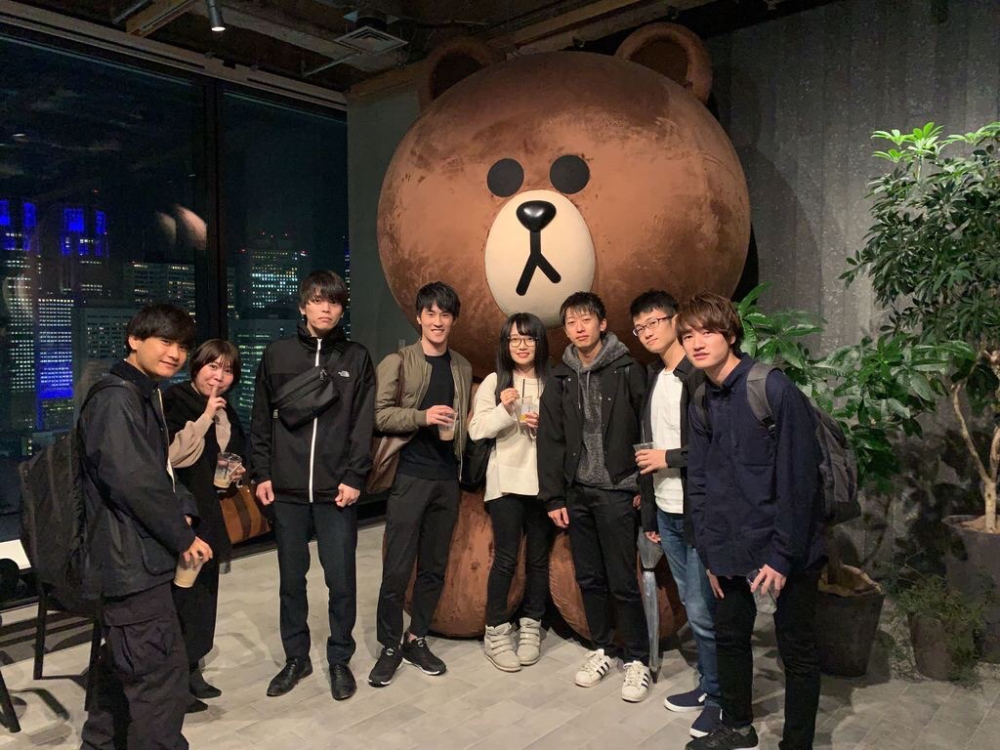

志ある若者が望んだ
道を歩ける
世界へ
志ある若者が望んだ
道を歩ける
世界へ
 



『Z-αntiphon(ジ・アンティフォン)』は『次世代ラボ』のRailsチャンネルから派生したプログラミングコミュニティです。 antiphonは「Rail」のラテン語で、『軌条（レール）』のように、みんなで支えあいながら頑張っていきたい それが今の若者のZ世代から、次世代の若者のα世代に引き継がれていくようにという意味が込められています。
主にSlackを用いて、プログラミング学習の情報交換を行っています。 また、プログラミングだけではなく、Webデザイン、英語、基本情報等の資格等あらゆる情報を共有しています。 Slackでは、時事的な問題も共有されているので、インプットにも有効です。 更に、メンバー1人につき、1個人チャンネルを用意しているので、自由に使っていただけます。 勉強をこまめに報告しておくと、わかる人に教えてもらえる等効果的です。
オンラインだけではなく、オフラインでの交流も定期的に交流しています。 具体的には、都内での勉強会を開催したり、食事をとったりしています。 時には、少し空き時間ができ、Slackで募集して急遽集まり一緒に勉強するなんてこともあります。 勉強会は都内のコワーキングスペースで主に行っており、よく使用する施設に永田町のYahoo LodgeやGaiax等があります。
メンバー内の活動だけでなく、企業様に協力していただきながら、勉強会等のイベントを開催しております。 過去の事例では、LINE新宿本社にて勉強会を開催させて頂きました。 2020年も既に多くのイベントを企画しています。 企業様と協力した勉強会や、ハッカソンなど、 スキルアップやアウトプットに最適なイベントを準備していくので、ぜひご参加ください。
Yama
文理混合学部所属。2019年3月プログラミング開始⇨次世代ラボRuby部門リーダー⇨プログラミングスクールメンター⇨ジアン運営⇨企業HP制作案件受託。
Tsuka
都内の国立大学3年。独学でRailsを学ぶ中でShuntaと出会い、意気投合。ジアンを運営する傍ら、大手SIer/コンサルファームを目指し就活中。好きなサプリはロディオラ。

Shunta
FintechSIer入社予定の都内大学4年 ︎。大学2.3年で人材営業インターン 、就活中に次世代ラボ創設⇨Railsスクールメンター ⇨独立してジアン創設⇨企業HP制作受託 ⇨ 11月中旬〜スタートアップでECサイト開発 。愛猫は琥太郎。